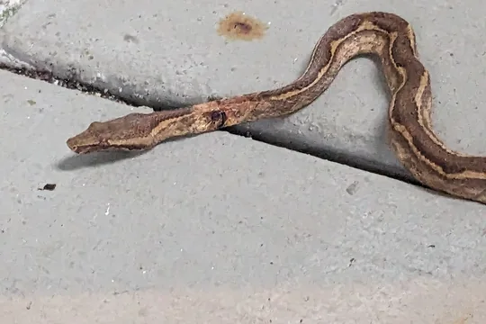
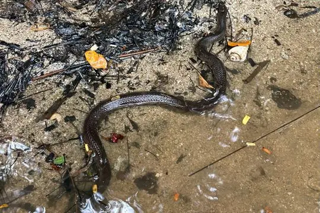
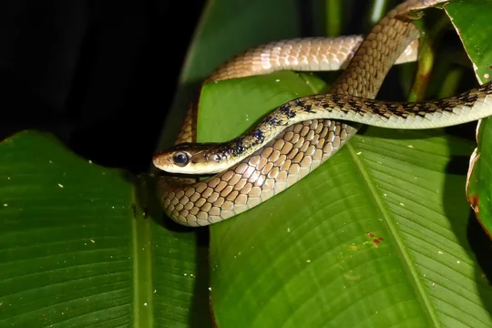

Snakes of Palau
4 living snake species are recorded in Palau in SnakeList: 0 venomous and 4 non-venomous, from 4 families.
- 4living species
- 4non-venomous
- 4families
Danger to people
- 0harmful to people
- 0dangerously venomous
- 0mildly venomous
- 0giant constrictors
- 4harmless
Harmful = dangerously venomous + giant constrictors. Harmless = not venomous and not a giant constrictor. Mildly venomous snakes have no serious bites to people documented. Any snake can bite.
These totals count the unique living snake species SnakeList records in Palau. A species counts if it is recorded anywhere in the country, so not every snake lives in every part of it.
In SnakeList’s checklist filters
How many of the 4 living species here each filter in the SnakeList app picks out.
Snake family3 types, 4 families
Type
- 1Boa
- 1Colubrid
- 2Other
Family
- 1Boidae
- 1Colubridae
- 1Homalopsidae
- 1Typhlopidae
Habitats6 habitat groups
- 2Forests & woodlands
- 1Underground & forest floor
- 1Wetlands & swamps
- 1Rivers & lakes
- 1Coasts & sea
- 1Around people
Habitats are estimated from where each snake is recorded and what kind of snake it is, as in the app; a snake can count in several.
Characteristics0 venomous, 1 constrictors
- 0venomous
- 4non-venomous
- 1constrictors
- 1non-constrictors
- 2constriction not documented
- 0snake eaters
Constrictor and Non-constrictor count only snakes whose family or genus is documented as constricting or not; the rest are not documented.
Other filters0 popular, 2 rare
- 0popular
- 4uncommon
- 4exotic
- 0invasive
- 0common
- 2rare
- 1no photos
- 0extinct
- 0harmful
- 4low risk
Species
Showing 4 species

Palau Bevel-nosed BoaCandoia superciliosa
Palau BockadamCerberus dunsoni
Palau BronzebackDendrelaphis striolatus- No photo yetPalau Island Blind SnakeRamphotyphlops acuticauda
No snakes in Palau match.
Palau’s snakes in numbers
- Families: Boidae 1, Colubridae 1, Homalopsidae 1, Typhlopidae 1.
- 4 are recorded in no other country or territory in SnakeList: Palau Bevel-nosed Boa, Palau Bockadam, Palau Bronzeback, Palau Island Blind Snake.
How precisely they are recorded
Of the 4 living species recorded in Palau, 2 are recorded by state in SnakeList’s data; 2 are recorded only for Palau as a whole, so the state pages list them as possible rather than recorded. SnakeList records each species by state, not by exact spot, so a species listed for a state may live in only part of it.
States
The states where SnakeList records snakes, with how many living species are recorded in each. Each page has its species, venomous snakes, families, the species found only there, its cities and neighbours.